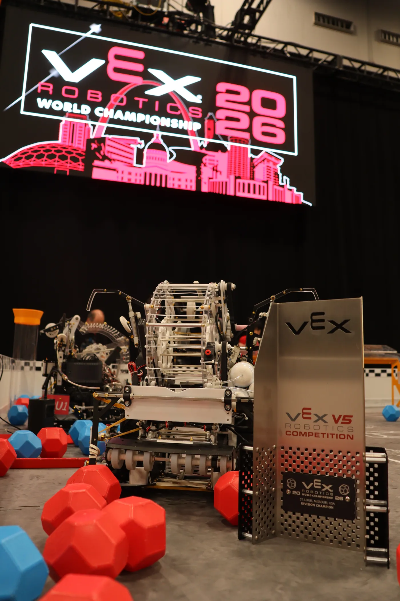
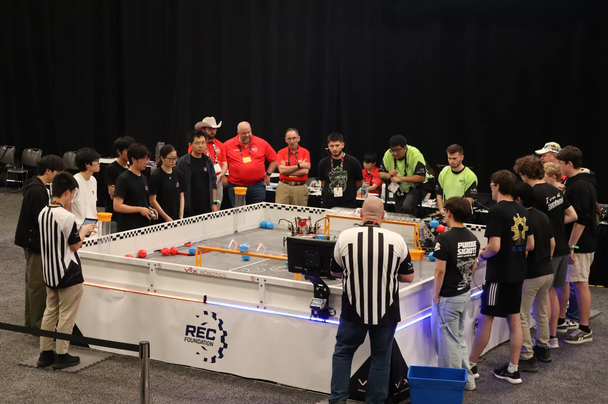
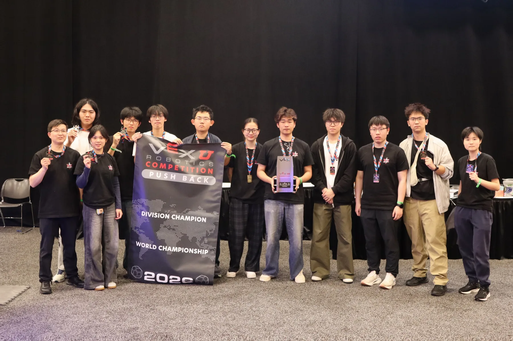
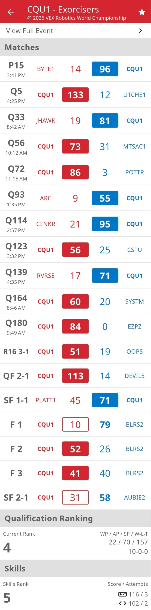

Autonomous control
Pose resets, point moves, and heading turns run alongside asynchronous intake and scoring.
CQU VEX U Robotics Team · 2024–2026
I worked on autonomous control and game-piece handling for Chongqing University's VEX U team. We won a division title at the 2026 VEX Robotics World Championship.
PROS C++ · LemLib · IMU + optical sensing

The autonomous code coordinates pose-based motion with intake and scoring. Red and blue match routes share the control stack; skills has a separate sequence.
IMU heading and LemLib pose control.
Optical hue, proximity, and motor torque.
Pose resets, point moves, and heading turns run alongside asynchronous intake and scoring.
Proximity-gated, six-sample hue voting drives alliance-aware ejection.
Motor torque triggers braking and timed selector recovery.


